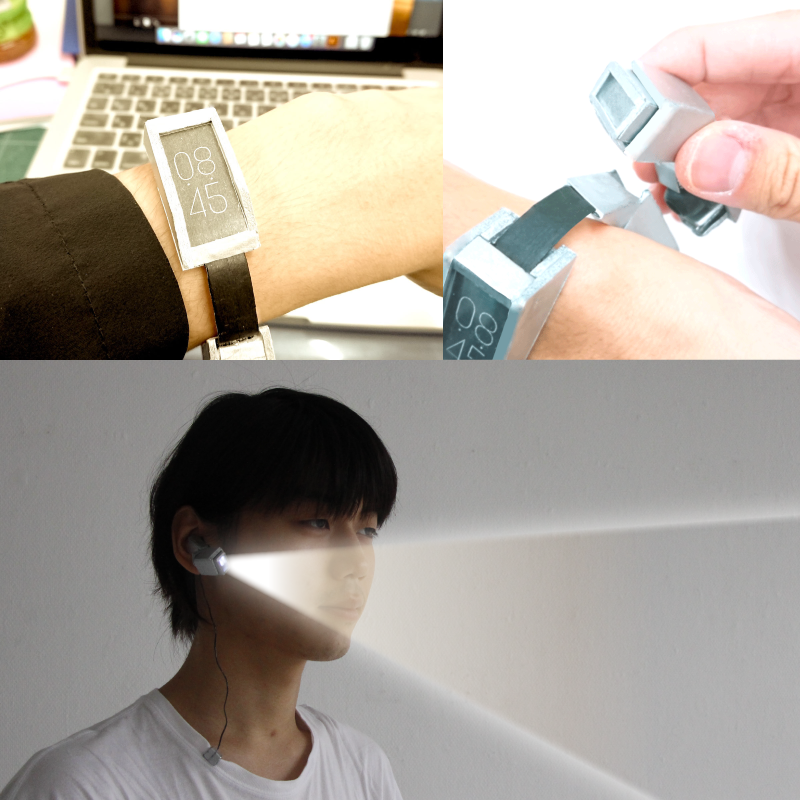
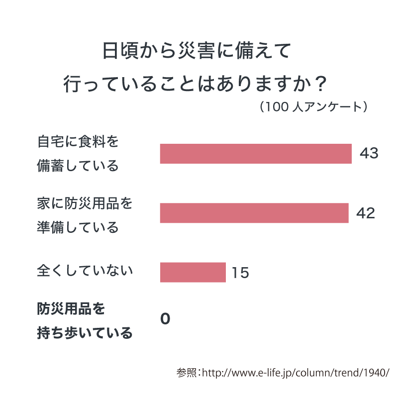
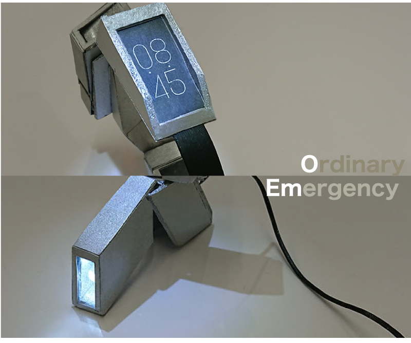
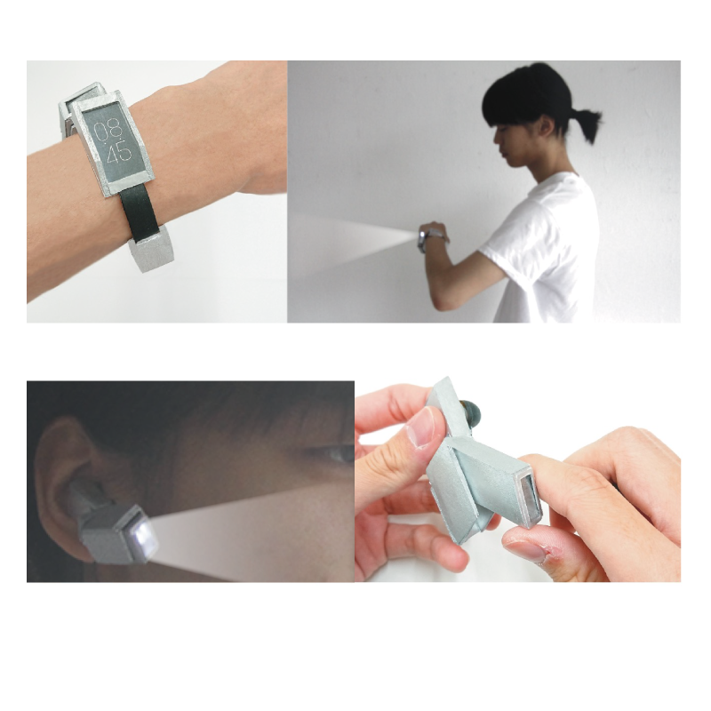

Emo-watch
持ち歩く防災グッズ
災害大国である日本において、防災グッズは身近な存在でなければならない。しかし、防災グッズを外に持ち出す機会は少なく、いざという時に持っていない可能性が高い。いざという時に用いる「防災グッズ」を「いざという時に『ちゃんと身につけている』防災グッズ」として、緊急時（emergency）と平常時（ordinary）のそれぞれで役割がある「Emotional」な防災グッズ「Emo」シリーズを考案。「Emo」シリーズの第一弾として、「Emo watch」をデザインした。
防災グッズに対する疑問
防災というのは「想定外を想定する」ためにあるはずなのに、防災グッズを普段から持ち歩く人は非常に少ない。災害時に役立つアイテムが「災害時にない」のでは、防災とは言えないのではと考えた。そして現在ある防災グッズや非常グッズは「持ち歩く」ことを想定しないタイプがほとんどであるということにも気づいた。
おしゃれに災害対策
普段は「時計」として持ち歩き、夜間などは手首につけたまま「手元のライト」として扱える。非常時にはライト部分だけを取り外して耳付けライトに変形させる。もさっとした「非常用」ではなく、アクセサリーでありながらスタイリッシュに災害対応ができる。
「災害」とともに生きる
地震大国・災害大国とも言われる日本では、大小さまざまな災害が日々発生し、今もなお避難生活を強いられる地域も存在する。常に非常グッズを持ち歩くことはしなくても、普段から使えるものが「災害時にも役立つ」という工夫をするだけで、災害への意識も対応も一気にしやすくなるだろう。思い出したときに訓練するのではなく、本当に大切なのは「日頃の災害への意識」なのである。
